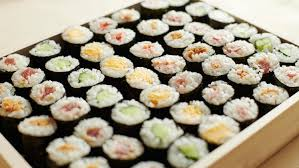

|
Sushi
We serve different kinds of sushi rolls, such as hosomaki rolls. We also serve the traditional style of sushi, called nigiri. We can serve sushi in different shapes too, like our oshizushi. You can choose your own preference of fillings, from vegan options like cucumber and avocado, to meaty options, such as salmon and tuna!
Sushi is one of Japan's national dish. It's easy, cheap, delicious,
and are artfully prepared by our master chefs.
Ever since the boom of Japanese meals around the world, sushi has never
stopped to become everyone's favourite comfort 'snack'.
Pair your choice of sushi with our signature soy sauce or fresh wasabi
to experience a new light and enjoyable flavour!
Our seaweeds and rice are 100% produced and harvested by our local farmers!
Come try our secret additive-free three-year soy sauce!
What are you waiting for?
Come give us a visit at our location today!
